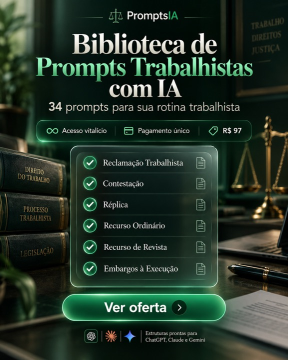
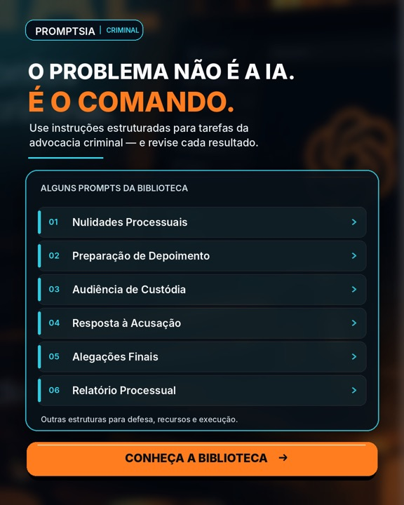
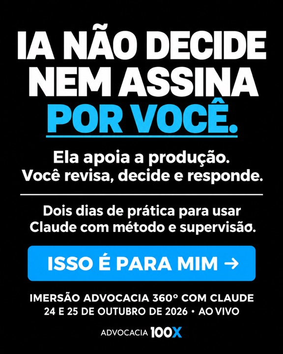
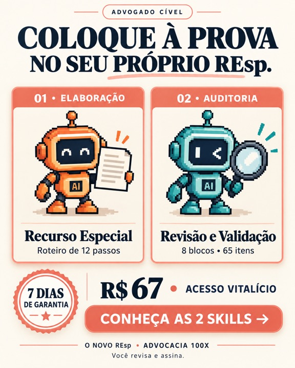
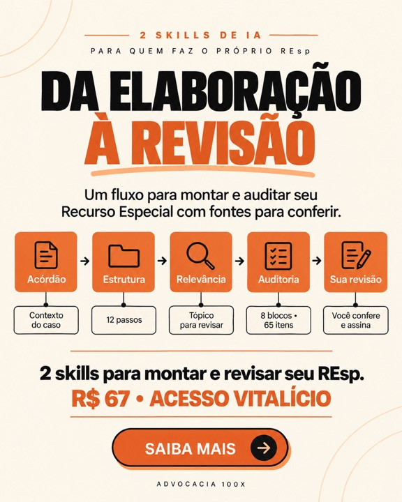
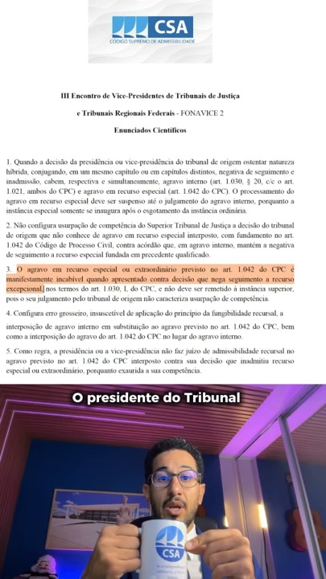
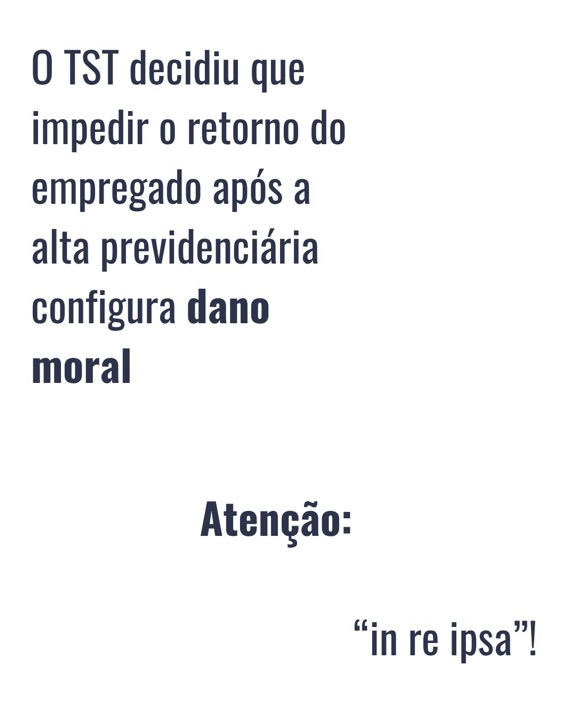
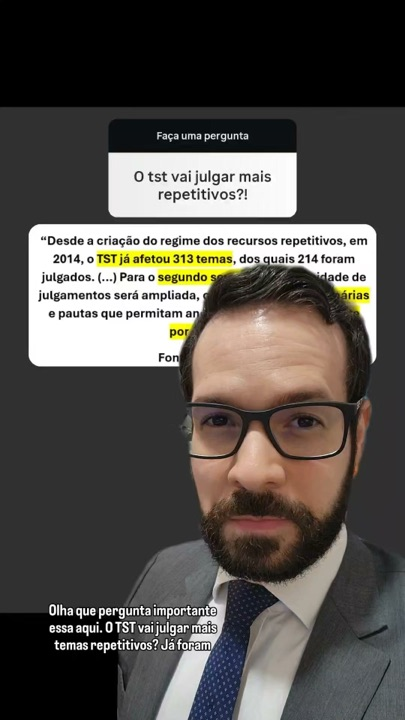

Prof. Murilo Soares · Manual do Prequestionamento no RR
Procuramos na Biblioteca de Anúncios da Meta quem vende curso, material ou ferramenta para advogado sobre Recurso de Revista, TST, embargos de declaração, admissibilidade e prática trabalhista. Foram 10 buscas e mais de 1.000 anúncios lidos; os escritórios que anunciam para o trabalhador ficaram de fora. Sobraram 12 páginas. Aqui está o que cada uma faz, o que se repete, o que não copiar e o que só o Murilo pode dizer.
Lemos 341 anúncios, entre os 412 que estas páginas mantêm ativos hoje. Três números resumem como esse mercado anuncia:
São a prova mais forte de que o formato funciona.
R$ 20,25 por mês, R$ 67, R$ 97: quem vende material barato põe o número no centro, num selo ou em destaque. É o que o Manual já faz com R$ 19,90, e é o preço mais baixo de todos.
Renato Barufi · Prompts IA · Advocacia 100X“Seu REsp está pronto. E a revisão?”, “Você revisou a tese. E a admissibilidade?”. O Manual tem a mesma pergunta para o RR: a matéria está no acórdão?
Advocacia 100X · André AlissonDecisão de inadmissão com trecho grifado, petição impressa, livro na mesa. Mostra o problema ou o produto sem explicar.
André Alisson · Tipografia Jurídica · IDCPost-it, caixinha de perguntas do Instagram, print de WhatsApp, “POV:”. As peças parecem conteúdo.
Advocacia 100X · Temas Repetitivos do TST · Renato Barufi · Tipografia Jurídica“Ex-assessor de Ministro do STF”, “mais de uma década assessorando juízes”. O Murilo tem a dele: mais de 7 mil RRs analisados dentro do TST.
André Alisson · Tipografia JurídicaSkills, prompts e agentes de IA para recurso já disputam o mesmo advogado. O Manual vende o critério que a IA não dá: o que precisa estar no acórdão.
Renato Barufi · Prompts IA · Advocacia 100X · Temas Repetitivos do TST01
Advogado trabalhista · “skills” de IA para a advocacia trabalhista, por assinatura
Biblioteca de anúncios ↗ Página no Facebook ↗
Usar o claude com skills treinadas por um advogado trabalhista seria interessante? Depois de muitos pedidos, as minhas podem fazer parte da sua rotina investindo pouco…
Botão: Saiba mais ver anúncio ↗
Recomendado para advogados trabalhistas
Botão: Ver detalhes ver anúncio ↗
Recomendado para advogados trabalhistas
Botão: Ver detalhes ver anúncio ↗
Recomendado para advogados trabalhistas
Botão: Ver detalhes ver anúncio ↗
Facilite seu dia a dia na advocacia trabalhista com as ferramentas de inteligência artificial utilizadas por mais de 500 advogados todos os dias.
Botão: Ver detalhes ver anúncio ↗
02
Biblioteca de prompts para advogado (trabalhista, cível e criminal) · R$ 97, pagamento único
Biblioteca de anúncios ↗ Página no Facebook ↗
⚖️ Imagine ter uma biblioteca de prompts prontos para auxiliar nas principais tarefas da advocacia criminal. 📚 Habeas Corpus, Resposta à Acusação, Alegações Finais,…
Botão: Saiba mais ver anúncio ↗
⚖️ Você ainda começa toda petição com um comando genérico para a IA? Conheça uma biblioteca com prompts estruturados para Petição Inicial, Contestação, Réplica,…
Botão: Saiba mais ver anúncio ↗

⚖️ ADVOGADO TRABALHISTA, CONHEÇA SUA NOVA BIBLIOTECA DE PROMPTS! Imagine ter comandos estruturados para utilizar a Inteligência Artificial nas principais tarefas da…
Botão: Saiba mais ver anúncio ↗
⚖️ DA RECLAMAÇÃO TRABALHISTA AO TST: USE A IA COM MAIS ESTRATÉGIA! Uma boa instrução faz diferença na maneira como o ChatGPT, Claude ou Gemini analisa um caso jurídico.…
Botão: Ver detalhes ver anúncio ↗

🤖 Você ainda pede ao ChatGPT simplesmente para "analisar um processo" ou "fazer uma petição"? ⚠️ O problema pode não estar na inteligência artificial, mas nas instruções…
Botão: Saiba mais ver anúncio ↗
03
Advocacia 100X · pacote “O Novo REsp” (skills de IA para Recurso Especial) por R$ 67
Biblioteca de anúncios ↗ Página no Facebook ↗

Advogado, quando chegam dez prazos de uma vez ao seu escritório, o que acontece com a sua agenda? A reunião com o cliente continua marcada. As publicações continuam…
Botão: Saiba mais ver anúncio ↗
Terminou de escrever o Recurso Especial? Advogado cível, vale fazer uma segunda pergunta: terminou de revisar? Depois de tantas leituras, você conhece cada argumento da…
Botão: Saiba mais ver anúncio ↗

Advogado cível: quem faz a segunda leitura do Recurso Especial que você acabou de escrever? Você estudou o acórdão, pesquisou os fundamentos e passou horas construindo a…
Botão: Saiba mais ver anúncio ↗

Advogado que faz o próprio REsp: seu tópico de relevância apresenta fundamentos ou apenas afirma que a matéria é relevante? Ao revisar esse trecho, algumas perguntas…
Botão: Saiba mais ver anúncio ↗
Você revisou a tese, mas e a admissibilidade? Na correria do escritório cível, é fácil esquecer detalhes importantes no REsp. A Advocacia 100X criou o pacote O Novo REsp…
Botão: Saiba mais ver anúncio ↗
04
Ex-assessor de Ministro do STF · admissibilidade de RE e REsp (Código Supremo de Admissibilidade)
Biblioteca de anúncios ↗ Página no Facebook ↗

O FONAVICE consolidou uma série de enunciados que impactam diretamente admissibilidade e processamento de recursos excepcionais — e a maioria dos advogados nunca teve…
Botão: Mensagem ver anúncio ↗
Súmula 7 do STJ e Súmula 279 do STF barram praticamente todo recurso que menciona "reexame de prova" — mesmo quando o que você está pedindo é a valoração jurídica dos…
Botão: Mensagem ver anúncio ↗
Antes de protocolar qualquer RE ou REsp, existe uma sequência técnica de verificação que decide se o recurso passa pela admissibilidade ou trava logo na origem.…
Botão: Mensagem ver anúncio ↗
"O juiz interpretou errado os fatos" é a objeção que mais ouço de advogado que teve recurso barrado. Só que RE e REsp não servem para reexaminar prova. Súmula 279/STF e…
Botão: Saiba mais ver anúncio ↗
Eu vi que você passou pela página do Código Supremo de Admissibilidade, mas ainda não deu o próximo passo para blindar seus recursos. Deixar a decisão para depois pode…
Botão: Saiba mais ver anúncio ↗
O Tribunal não lê o recurso como o advogado escreve. Como ex-assessor de Ministro do STF e Promotor Auxiliar do PGR, eu vi milhares de recursos com teses excelentes…
Botão: Saiba mais ver anúncio ↗
05
Prof. Milene Scheer · Imersão Embargos de Declaração e cursos de recursos cíveis
Biblioteca de anúncios ↗ Página no Facebook ↗
Na Imersão Embargos de Declaração, você vai aprender a elaborar embargos do jeito certo: com técnica, clareza e impacto real no resultado. Clique em saiba mais e garanta…
Botão: Ver detalhes ver anúncio ↗
🧾 Esses são apenas alguns depoimento dos mais de 400 advogados que são alunos do Curso de Recursos nas Execuções Fiscais da Prof. Milene Scheer: um passo a passo…
Botão: Saiba mais ver anúncio ↗
Se você atua em tributário, talvez o filtro de relevância preocupa menos os tributaristas. E nas execuções você ainda precisa dominar os recursos de embargos, agravos e…
Botão: Saiba mais ver anúncio ↗
Os embargos de declaração têm muitas peculiaridades. Na Imersão Embargos de Declaração de Valor você vai acessar diversas delas. Informações práticas para aumentar as…
Botão: Saiba mais ver anúncio ↗
O filtro de relevância no recurso especial não exige apenas a inclusão de um tópico na sua petição. A Tutora Praxis foi atualizada para te auxiliar na estrutura da…
Botão: Saiba mais ver anúncio ↗
Máquina de escrever, computador, modelos prontos, inteligência artificial. Cada fase exigiu uma adaptação e agora não vai ser diferente. A Tutora Praxis facilita essa…
Botão: Saiba mais ver anúncio ↗
06
E-book “Temas Repetitivos do TST” + agente de IA, e curso de provas digitais
Biblioteca de anúncios ↗ Página no Facebook ↗

Comente TEMAS e eu te envio no direct o link para conhecer o e-book dinâmico Temas Repetitivos do TST. Nele, cada Tema vem com tese, contexto, fundamentos, aplicação e…
Botão: Perfil do Instagram ver anúncio ↗
Domine as provas digitais na prática trabalhista: saiba como obter, preservar, apresentar e impugnar evidências digitais com mais segurança técnica.
Botão: Saiba mais ver anúncio ↗
Você lida com provas digitais diariamente. WhatsApp, e-mails, redes sociais, geolocalização, documentos eletrônicos, áudios, vídeos e registros de sistemas já fazem…
Botão: Ver detalhes ver anúncio ↗

Domine os Temas Repetitivos do TST em 10 minutos por dia, com leitura estratégica, aplicação prática e memorização visual. E-book + Agente de IA
Botão: Ver detalhes ver anúncio ↗
Quantas horas você ainda vai perder procurando jurisprudência dispersa e tentando descobrir qual Tema Repetitivo do TST realmente se aplica ao seu caso? Os Temas…
Botão: Ver detalhes ver anúncio ↗
07
Masterclass e modelos de formatação de petição
Biblioteca de anúncios ↗ Página no Facebook ↗
Domine este recurso poderoso para transformar capturas de tela em argumentos visuais claros, estratégicos e persuasivos Aprenda técnicas avançadas para capturar,…
Botão: Saiba mais ver anúncio ↗
Depois de mais de uma década assessorando juízes, eu quero te mostrar como desenvolver uma petição capaz de reter a atenção, transmitir credibilidade e fortalecer os…
Botão: Saiba mais ver anúncio ↗
Petições que captam a atenção e aumentam suas chances de êxito. Na masterclass você irá aprender: ✅ O que influencia o processo decisório ✅ Os erros que atrapalham a…
Botão: Saiba mais ver anúncio ↗
08
Formação e Comunidade Advocacia Trabalhista
Biblioteca de anúncios ↗ Página no Facebook ↗
09
Professor de processo civil · embargos de declaração
Biblioteca de anúncios ↗ Página no Facebook ↗
10
Método para audiência trabalhista · aula gratuita
Biblioteca de anúncios ↗ Página no Facebook ↗
11
Escola Brasileira de Atuação nos Tribunais Superiores · pós e masterclass
Biblioteca de anúncios ↗ Página no Facebook ↗
Você pode passar anos estudando Direito e ainda não estar preparado para atuar nos Tribunais Superiores. A verdade é que a faculdade não ensina as estratégias, os…
Botão: WhatsApp ver anúncio ↗
ATENÇÃO ADVOGADO! Conheça a pós-graduação em atuação perante o STF! Quem é o advogado, na sua cidade ou na sua região, que é referência em atuação no Supremo Tribunal…
Botão: WhatsApp ver anúncio ↗
Conheça a pós-graduação @escolabrasileiraats Quem é o advogado, na sua cidade ou na sua região, que é referência em atuação no Supremo Tribunal Federal? O acesso ao…
Botão: Perfil do Instagram ver anúncio ↗
Quem é o advogado, na sua cidade ou na sua região, que é referência em atuação no Supremo Tribunal Federal? O acesso ao Supremo foi democratizado com o processo…
Botão: Perfil do Instagram ver anúncio ↗
A Relevância da Questão Federal colocou o Recurso Especial em uma nova fase. E a alta advocacia precisa estar preparada. A instituição da Relevância da Questão Federal…
Botão: WhatsApp ver anúncio ↗
A Escola Brasileira de Atuação nos Tribunais Superiores abre agora as inscrições para a MASTERCLASS RECURSO EXTRAORDINÁRIO + Aplicações teóricas e práticas ao recurso…
Botão: Perfil do Instagram ver anúncio ↗
12
Instituto e editora de Direito Contemporâneo · livros de tribunais superiores
Biblioteca de anúncios ↗ Página no Facebook ↗
Já imaginou assistir (de verdade) às aulas de Barbosa Moreira, Calmon de Passos, Galeno Lacerda, Teori Zavascki, Ada Pellegrini Grinover e tantos outros mestres que…
Botão: Saiba mais ver anúncio ↗
Uma homenagem contemporânea à genialidade de Piero Calamandrei, jurista, político e professor que moldou a estrutura do processo civil moderno e influenciou gerações de…
Botão: Ver detalhes ver anúncio ↗
Com base em uma análise crítica e profunda, esta obra demonstra que a reclamação é um instrumento poderoso de controle da aplicação dos precedentes e da correta…
Botão: Ver detalhes ver anúncio ↗
Se você preza pela alta performance no Direito, estes 5 livros não podem faltar na sua estante: 1️⃣ Os Embargos de Divergência e a Força Vinculante de Suas Decisões ➡️…
Botão: Ver detalhes ver anúncio ↗
Ele contando, para a câmera, o que via nos mais de 7 mil RRs que analisou dentro do TST: a tese era boa e a matéria não estava no acórdão. Ninguém mais fala de dentro do TST para o trabalhista.
Estático com uma decisão de não conhecimento por falta de prequestionamento (pública, sem nome das partes), com o trecho grifado, e embaixo: “isso se evita no TRT”.
Na linha do post-it da Advocacia 100X, para o RR: “Acórdão publicado. A matéria está nele?”, com o mockup do Manual e R$ 19,90.